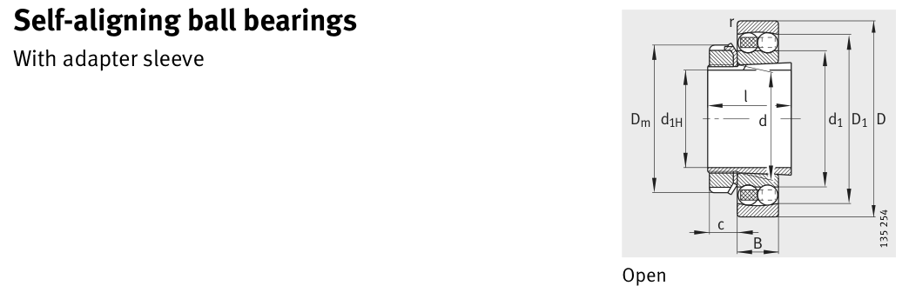

Original catalogue drawing - FAG Schaeffler HR 1, page 352

Scanned from the manufacturer catalogue page listing this part number. All part numbers printed on that table share the same drawing.
Scale cross-section
Blue = inner / outer ring, yellow = rolling element. Drawn to scale from this part's own
dimensions for selection reference only - not a manufacturing or assembly drawing.
Dimension table (mm / inch)
Symbol
Dimension
mm
inch
d
Bore diameter
95
3.7402
D
Outside diameter
170
6.6929
B
Inner-ring / bearing width
43
1.6929
r
Chamfer (min)
2.1
0.0827
Notes
Weights are given in kg. Load ratings are shown in both the original catalogue units and the converted value (1 N = 0.2248 lbf). Data is provided for selection reference only - confirm against the latest official catalogue before ordering.
Main dimensions
Bore d (mm)
95
Outside dia. D (mm)
170
Width B (mm)
43
Inner-ring OD d1 (mm)
118.9
Inner-ring shoulder dia. D1 (mm)
148.6
Load ratings & speeds
Basic dynamic load rating Cr (lbs)
18884
Basic static load rating Cor (lbs)
7644
Basic dynamic load rating Cr (N)
84000
Basic static load rating C0r (N)
34000
Fatigue limit load Cur (N)
1840
Factor e
0.27
Factor Y0
2.43
Limiting speed nG (rpm)
6,000
Reference speed nB (rpm)
5,600
Weight
Weight (kg)
4.24
Mounting dimensions (fillets / shoulders)
Housing fillet r max (mm)
2.1
Shaft shoulder da (mm)
114
Shaft shoulder db (mm)
102
Housing shoulder Da (mm)
158
Housing fillet ra max (mm)
2.1
Bearing life (ISO 281 basic rating life)
C / P
Equivalent load P (N)
L10 (106 rev)
L10h at 2,000 rpm
4
21,000
64
533
6
14,000
216
1,800
8
10,500
512
4,267
10
8,400
1,000
8,333
15
5,600
3,375
28,125
Basic rating life per ISO 281: L10 = (C/P)3 with C = 84,000 N. Hours = L10 x 106 / (60n). Life-modification factors for lubrication, contamination and temperature (aISO) are not included.
Source & traceability
Brand
FAG
Source catalogue
FAG / Schaeffler Rolling Bearings HR 1
Catalogue page
p.352 (dimensions)
Load ratings in newtons, fatigue limit load Cur, limiting speed nG and reference speed nB.
Send us the quantity you need and we will come back with price and
lead time, normally within 24 hours. Equivalent parts from other brands can be quoted at the same time.